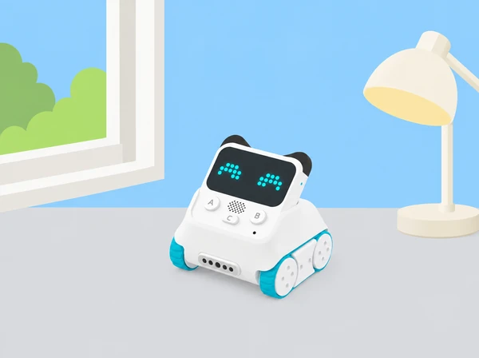

Preparem un mapa d’observació de la llum: prop de la finestra, al centre de l’aula i en un racó. Codey mostra una lectura del sensor de llum ambiental; la classe investiga com comparar mesures sense confondre-les amb una escala professional d’il·luminació.
Practiquem observació, variables, repetició, representació de dades i argumentació. El grup entrega el protocol breu, una taula o gràfic i una conclusió que incloga almenys una limitació de la mesura.
La lectura integrada és relativa i depén del model i del programa. Manteniu el sensor orientat de la mateixa manera, eviteu tapar-lo i registreu les condicions de cada prova. No presenteu el resultat com una mesura certificada de lux, de consum o de confort visual.
Utilitzeu una escala visual de tres rangs acordada pel grup, descripcions verbals i gràfics tàctils o de formes. La conclusió pot presentar-se com a pòster, àudio o explicació oral.
Hem pres com a punt de partida Case 6: Display the ambient light intensity. Aquesta situació és una proposta pròpia amb context, seqüència i materials verificables per al centre; no reprodueix ni substitueix el material oficial. Comproveu sempre el model de robot i els accessoris disponibles.